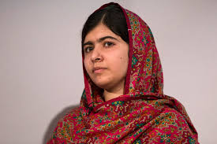
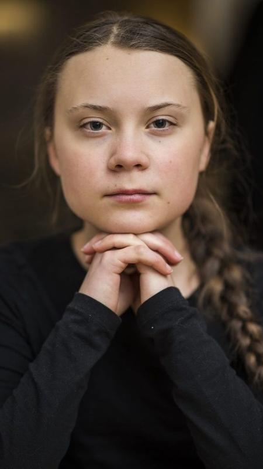

.
nascida em 30 de novembro de 1979, é uma ativista ambiental canadense, palestrante, apresentadora de televisão e autora. Falou ao redor do mundo sobre questões ambientais, instalando os ouvintes a definir seus valores, agir com o futuro em mente e assumir a responsabilidade individual.

Nascida em 12 de julho de 1997, é uma ativista paquistanesa. A pessoa mais nova ser laureada ao prêmio Nobel. Conhecida pela defesa dos Direitos Humanos das mulheres e do acesso à educação na sua região Natal do Vale do SWAT na Província de khyber, no nordeste do Paquistão. O ativismo de Malala tornou-se um movimento internacional.
Nascida em 3 de janeiro de 2003, é uma ativista ambiental sueca, conhecida por ter protestado fora do prédio do Parlamento Sueco, e por ser livre e líder do movimento greve das escolas pelo clima. Foi considerada entre "personalidade do ano" pela revista "Time".